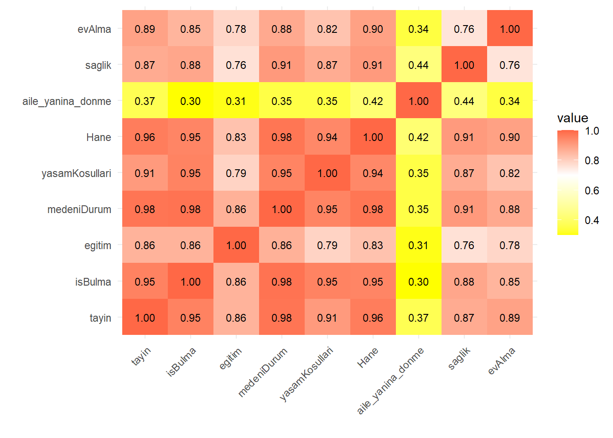

Projemizle ilgili güncellemelerden haberdar olmak için bu alanı takip edin.
1 Proje Genel Bakış ve Kapsamı
Türkiye’de 2018-2022 yilları arasında gerçekleşen genel göç durumunu inceliyoruz. Bu kapsamda, en çok ve en az göç alan illeri sıraladık. İlave veriler ile göçlerin nedenlerini araştırdık ve pandemi sebebiyle özellikle 2020 yılı verilerine odaklandık.
Warning: package 'readxl' was built under R version 4.3.3
Show the code
library(knitr)
Warning: package 'knitr' was built under R version 4.3.3
Show the code
# Excel dosyasını okualinan_goc <-read_excel("goc_etme_nedenine_illerin_aldigi_goc.xlsx")# İlk 15 satır ve tüm sütunları gösterkable(head(alinan_goc, 15))
Tayin: Kişinin tayin olması veya yaptığı işin/çalıştığı işyerinin değişmesi (firma, şirket, kurum vb. değişikliği) nedeniyle taşınmasıdır.
İş bulma: İşsiz olan kişinin iş bulması sonucunda işe başlamak için taşınmasıdır. İş aramak için yapılan taşınmalar da bu kapsamdadır.
Eğitim: Kişinin eğitim (üniversite eğitimi/uzun süreli kurs vb.) almak ve eğitimin tamamlanması veya herhangi bir sebeple sona ermesi nedeniyle taşınmasıdır.
Medeni durum: Kişinin evlilik, boşanma veya eşinin ölmesi nedeniyle taşınmasıdır. Ayrıca, gayri resmi ayrılık ve birleşmeler de bu kapsamdadır.
Yaşam koşulları: Daha büyük, yeni, nitelikli (asansör, park yeri, oyun alanı gibi özelliklere sahip) ve ulaşım imkânları daha iyi bir konutta oturmak için taşınmaktır. Ayrıca gürültü, hava kirliliği gibi çevresel koşullar sebebiyle ve daha iyi ve güvenli bir sosyal çevrede yaşamak için yapılan taşınmalar da bu kapsamdadır. Daha iyi bir yaşam için coğrafya ve iklim koşullarına bağlı taşınmalar da bu kategori altında değerlendirilmelidir.
Hane: Kişinin hanehalkı/aile üyelerinden herhangi birine bağımlı olarak taşınmasıdır.
Ev almak: Kişinin ev alması nedeniyle taşınmasıdır. Kirada oturan kişilerin kendi evlerini almaları, ev sahibi olan kişilerin yeni bir ev almaları sonucu taşınmaları bu kapsamdadır.
Emeklilik: Kişinin emeklilik sonrasında taşınmasıdır.
Aile yanına geri dönme: Kişinin ailesinin bulunduğu yerleşim yerine veya doğum yeri/memlekete dönme sebebiyle taşınmasıdır. Aile fertlerinin birleşmesi bu maddeye dâhildir.
Sağlık: Kişinin hastalık, yaşlılık, engellilik vb. nedenlerle daha iyi sağlık hizmeti veya bakım alabilmek için taşınmasıdır. Bakım için aile fertlerinin birbirlerinin yanına taşınması da bu kapsamda değerlendirilmektedir.
1.4 Tercih Sebepleri
Bu veri setini seçmemizde bir kaç neden etkili olmuştur.
Analiz Amaçları: Göç istatistikleri, birçok farklı alanda önemli bilgiler sağlayabilir. Örneğin, ekonomik kalkınma, işgücü hareketleri, eğitim, sağlık hizmetleri talebi gibi konuları analiz etmek için göç verileri kullanılabilir.
Zaman Aralığı: Seçtiğimiz zaman aralığı (2018-2022), son beş yılda Türkiye’deki göç eğilimlerini incelememizi sağlamaktadır.Bu dönemdeki göç eğilimleri, ekonomik ya da sosyal değişikliklerin etkilerini değerlendirmemize yardımcı olabilir.
Kapsam: Veri setimizin kapsamı Türkiye genelindeki farklı illeri içermesi nedeniyle farklı bölgeler arasındaki göç sayılarını inceleme fırsatını da bize sunmaktadır.Bu, bölgesel kalkınma eğilimlerini ve farklı illerdeki yaşam koşullarının etkilerini anlamamıza yardımcı olmaktadır.
Değişkenlerin Çeşitliliği: Seçtiğimiz değişkenler, göç nedenlerini çeşitli açılardan analiz etmemize olanak tanır. Örneğin, iş bulma, eğitim imkanları, aile birleşimi gibi farklı faktörlerin göç kararları üzerindeki etkilerini değerlendirebiliriz
Toplumsal İhtiyaçlar: Göç istatistikleri, toplumun belirli ihtiyaçlarını anlamak için kullanılabilir. Örneğin, sağlık hizmetlerine erişim, yaşam koşulları, ev alma gibi göç nedenlerinin toplumsal etkileri değerlendirilebilir.
##veri setinin ilk bir kaç satırını göstermehead(alinan_goc)
# A tibble: 6 x 12
il yil tayin isBulma egitim medeniDurum yasamKosullari Hane
<chr> <dbl> <dbl> <dbl> <dbl> <dbl> <dbl> <dbl>
1 Adana 2022 6635 3620 7990 3273 10274 14153
2 Adiyaman 2022 1918 1222 3332 945 3612 4381
3 Afyonkarahisar 2022 2620 1918 6575 1164 3690 4228
4 Agri 2022 2810 877 2508 934 1992 4983
5 Amasya 2022 1643 1200 3639 798 1833 3645
6 Ankara 2022 23625 18872 36427 12054 27932 36157
# i 4 more variables: aile_yanina_donme <dbl>, saglik <dbl>, evAlma <dbl>,
# emeklilik <dbl>
Show the code
##alinan_goc veri çerçevesindeki veriyi daha "düzenli" bir formata dönüştürür ve new_tidy_data adında yeni bir veri seti oluşturur. Buradaki amaç, veriyi daha analiz edilebilir hale getirmek ve veri işleme sürecini kolaylaştırmaktır##pivot_longer() fonksiyonu kullanılarak, veri çerçevesindeki sütunlar uzun formata dönüştürülür. Yani, her bir göç nedeni bir sütun yerine, il ve yil sütunları sabit kalacak şekilde, diğer sütunlar göç nedeni ve göç sayısı olacak şekilde yeniden yapılandırılır##cols = -c(il, yil): il ve yil sütunları dışındaki tüm sütunlar işleme alınır names_to = "gocNedeni": Sütun adları, "gocNedeni" adında yeni bir sütuna dönüştürülür.##mutate() fonksiyonu kullanılarak, "gocNedeni" sütunu karakter veri tipine dönüştürülür##head() fonksiyonu kullanılarak, yeni oluşturulan new_tidy_data veri çerçevesinin ilk altı satırı ekrana yazdırılırnew_tidy_data <- alinan_goc %>%pivot_longer(cols =-c(il, yil), names_to ="gocNedeni", values_to ="gocSayisi") %>%mutate(gocNedeni =as.character(gocNedeni))head(new_tidy_data)
# A tibble: 6 x 4
il yil gocNedeni gocSayisi
<chr> <dbl> <chr> <dbl>
1 Adana 2022 tayin 6635
2 Adana 2022 isBulma 3620
3 Adana 2022 egitim 7990
4 Adana 2022 medeniDurum 3273
5 Adana 2022 yasamKosullari 10274
6 Adana 2022 Hane 14153
Show the code
##veri setindeki sütun adlarını döndürürcolnames(new_tidy_data)
[1] "il" "yil" "gocNedeni" "gocSayisi"
Show the code
##new_tidy_data veri setindeki her sütundaki eksik değerlerin sayısını hesaplamacolSums(is.na(new_tidy_data))
tibble [4,050 x 4] (S3: tbl_df/tbl/data.frame)
$ il : chr [1:4050] "Adana" "Adana" "Adana" "Adana" ...
$ yil : num [1:4050] 2022 2022 2022 2022 2022 ...
$ gocNedeni: chr [1:4050] "tayin" "isBulma" "egitim" "medeniDurum" ...
$ gocSayisi: num [1:4050] 6635 3620 7990 3273 10274 ...
Show the code
##new_tidy_data veri setindeki tekrarlanan satırların sayısını hesaplar.sum(duplicated(new_tidy_data))
[1] 0
Veri setimizdeki Göç Sayılarının bulunduğu sütunun özet istatistikleri görülmektedir.
2018-2022 yılları arasındaki minimum göç sayısı 2’dir.
2018-2022 yılları arasındaki maximum göç sayısı 152.756’dır.
2018-2022 yılları arasında yapılan ortalama göç sayısı 2979,1’dir
Show the code
##new_tidy_data veri setindeki "gocSayisi" adlı sütunun özet istatistikleri hesaplanırsummary(new_tidy_data$gocSayisi)
Min. 1st Qu. Median Mean 3rd Qu. Max.
2.0 407.2 1222.5 2979.1 3156.0 152756.0
Minimum göç sayısının 2 olduğunu aşağıdaki tabloda görüyoruz.
2018-2022 yılları arasında minimum göç 2022 yılında emeklilik nedeniyle Hakkari’ye yapılmıştır.
Show the code
##new_tidy_data veri setindeki verileri gocSayisi sütununa göre sıralama ve ilk altı satırını ekrana yazdırmanew_tidy_data %>%arrange(gocSayisi) %>%head()
Maximum göç sayısının 152.756 olduğunu aşağıdaki tabloda görüyoruz.
2018-2022 yılları arasında maximum göç 2019 yılında yaşam koşulları nedeniyle İstanbul’a yapılmıştır.
Show the code
##new_tidy_data veri setindeki verileri gocSayisi sütununa göre azalan sıraya göre sıralama ve ilk altı satırını ekrana yazdırmanew_tidy_data %>%arrange(desc(gocSayisi)) %>%head()
# A tibble: 6 x 4
il yil gocNedeni gocSayisi
<chr> <dbl> <chr> <dbl>
1 Istanbul 2019 yasamKosullari 152756
2 Istanbul 2019 Hane 102314
3 Istanbul 2020 yasamKosullari 88975
4 Istanbul 2022 yasamKosullari 87557
5 Istanbul 2021 yasamKosullari 80500
6 Istanbul 2021 egitim 77296
Show the code
## new_tidy_data veri setindeki veriler arasından gocSayisi sütunundaki en yüksek 10 değerigöstermenew_tidy_data %>%top_n(10, gocSayisi)
# A tibble: 10 x 4
il yil gocNedeni gocSayisi
<chr> <dbl> <chr> <dbl>
1 Istanbul 2022 yasamKosullari 87557
2 Istanbul 2022 Hane 64099
3 Istanbul 2021 egitim 77296
4 Istanbul 2021 yasamKosullari 80500
5 Istanbul 2020 yasamKosullari 88975
6 Istanbul 2020 Hane 65478
7 Istanbul 2019 yasamKosullari 152756
8 Istanbul 2019 Hane 102314
9 Istanbul 2018 yasamKosullari 72873
10 Istanbul 2018 Hane 74627
2 Analizler
Show the code
library(ggplot2)veri <-data.frame( Yil =c(2018,2019,2020,2021,2022),Toplam_Ic_Goc =c(3057606,2806123,2258726,2777797,2791156))ggplot(veri, aes( x = Yil, y = Toplam_Ic_Goc)) +geom_bar(stat ="identity" , fill ="red" , color ="black") +labs(title ="Yıllara Göre Göç Sayısı" , x ="Yıl" , y ="Toplam İç Göç") +scale_y_continuous(labels = scales::comma)
Show the code
##alinan_goc veri çerçevesindeki veriyi daha "düzenli" bir formata dönüştürür ve new_tidy_data adında yeni bir veri seti oluşturur. Buradaki amaç, veriyi daha analiz edilebilir hale getirmek ve veri işleme sürecini kolaylaştırmaktır##pivot_longer() fonksiyonu kullanılarak, veri çerçevesindeki sütunlar uzun formata dönüştürülür. Yani, her bir göç nedeni bir sütun yerine, il ve yil sütunları sabit kalacak şekilde, diğer sütunlar göç nedeni ve göç sayısı olacak şekilde yeniden yapılandırılır##cols = -c(il, yil): il ve yil sütunları dışındaki tüm sütunlar işleme alınır names_to = "gocNedeni": Sütun adları, "gocNedeni" adında yeni bir sütuna dönüştürülür.##mutate() fonksiyonu kullanılarak, "gocNedeni" sütunu karakter veri tipine dönüştürülür##head() fonksiyonu kullanılarak, yeni oluşturulan new_tidy_data veri çerçevesinin ilk altı satırı ekrana yazdırılırnew_tidy_data <- alinan_goc %>%pivot_longer(cols =-c(il, yil), names_to ="gocNedeni", values_to ="gocSayisi") %>%mutate(gocNedeni =as.character(gocNedeni))
Bu grafik, 2018 ile 2022 yılları arasındaki toplam Türkiye geneli iç göç sayısını göstermektedir. Grafikte göç sayısının 2018’den 2020’ye kadar azaldığı, ancak 2021 ve 2022 yıllarında tekrar artış gösterdiği gözlemlenebilir.2020 yılındaki düşüş pandeminin etkisiyle seyahat ve göç kısıtlamalarından kaynaklanıyor olabilir.
Show the code
# Veri setindeki göç nedenlerini yıllara göre topla##group_by() fonksiyonu kullanılarak new_tidy_data veri setindeki "yil" ve "gocNedeni" sütunlarına göre gruplanır. Daha sonra summarise() fonksiyonu ile her yıl ve göç nedeni kombinasyonu için toplam göç sayısı hesaplanır.summarized_data <- new_tidy_data %>%group_by(yil, gocNedeni) %>%summarise(total_gocSayisi =sum(gocSayisi), .groups ="drop")# Bar plot oluşturggplot(summarized_data, aes(x =factor(yil), y = total_gocSayisi, fill = gocNedeni)) +geom_bar(stat ="identity", position ="dodge") +labs(title ="Göç Nedenlerine Göre Yıllara Göre Dağılım",x ="Yıl",y ="Toplam Göç Sayısı",fill ="Göç Nedeni") +theme_minimal() +theme(plot.title =element_text(hjust =0.5),axis.text.x =element_text(angle =45, hjust =1)) +scale_y_continuous(labels = scales::number_format())
Bu grafikte yıllara göre göç nedenleri ve göç sayıları verilmiştir. 5 yıl boyunca göç nedenlerine göre göç sayıları benzerlik gösterirken 2020 yılında eğitim sebebiyle göç sayısında ciddi bir düşüş gözlemlenmektedir. Kapanmaların artması ve eğitim sisteminin online düzene geçmesiyle beraber öğrenci hareketliliğinin azaldığını görebilmekteyiz.
Show the code
##boxplot data görselleştirmenew_tidy_data <- new_tidy_data %>%mutate(bolge =case_when( il %in%c("Istanbul", "Bursa", "Kocaeli", "Tekirdag","Balikesir","Canakkale","Bilecik","Edirne","Kirklareli","Sakarya","Yalova") ~"Marmara", il %in%c("Izmir", "Aydin", "Manisa","Afyonkarahisar","Denizli","Kutahya","Manisa","Mugla","Usak") ~"Ege", il %in%c("Ankara", "Konya", "Eskisehir","Cankiri","Corum","Kayseri","Kirsehir","Konya","Nevsehir","Nigde","Sivas","Yozgat","Aksaray","Karaman","Kirikkale") ~"Ic Anadolu", il %in%c("Artvin", "Giresun", "Ordu","Rize","Sinop","Tokat","Trabzon","Zonguldak","Amasya","Bolu","Gumushane","Kastamonu","Samsun","Sinop","Bayburt","Bartin","Karabuk","Duzce") ~"Karadeniz", il %in%c("Adana", "Antalya","Burdur","Hatay","Isparta","Kahramanmaras","Osmaniye") ~"Akdeniz", il %in%c("Adiyaman","Diyarbakir","Gaziantep","Mardin","Siirt","Sanliurfa","Batman","Sirnak","Kilis") ~"Guneydogu Anadolu", il %in%c("Agri","Bingol","Bitlis","Elazig","Erzincan","Erzurum","Hakkari","Kars","Malatya","Muş","Tunceli","Van","Ardahan","Igdir") ~"Dogu Anadolu",#TRUE ~ "Diger" # Diğer bölgelere dahil olan iller için bir kategori belirleyin ))ggplot(new_tidy_data %>%filter(yil ==2020 , bolge !="Diger"), aes(x = gocNedeni, y = gocSayisi, fill = bolge)) +geom_boxplot() +labs(title ="2020 Yılına Göre Göç Nedenleri ve Bölgelere Göre Dağılımı",x ="Göç Nedeni",y ="Göç Sayısı",fill ="Bölge") +theme_minimal() +theme(plot.title =element_text(hjust =0.5),axis.text.x =element_text(angle =45, hjust =1))+scale_y_continuous(trans ='log10', labels =function(x) format(x, scientific =FALSE)) # Y eksenini logaritmik ölçekleme yaparak ayarla
Bölgesel Farklılıklar:
Marmara Bölgesi: Marmara, çoğu göç nedeninde yüksek medyan değerlere sahip, bu da bölgenin diğerlerine göre daha fazla göç aldığını gösteriyor. İş bulma, eğitim ve aile yanına dönme gibi nedenlerde özellikle belirgin. Doğu ve Güneydoğu Anadolu: Bu bölgeler, göç sayıları açısından genellikle daha düşük medyan değerlere sahip, bu da daha az göç aldıklarını veya bu bölgelerden göç veren kişi sayısının daha fazla olduğunu düşündürebilir.
Göç Nedenleri Arasındaki Farklar:
İş Bulma ve Eğitim: Bu iki neden, çoğu bölgede yüksek göç sayıları ile öne çıkıyor. Bu, özellikle genç nüfusun ve iş arayanların daha iyi fırsatlar peşinde diğer bölgelere taşındığını gösteriyor. Sağlık: Sağlık nedeniyle yapılan göçler, bölgeden bölgeye farklılık gösteriyor, ancak bazı bölgelerde (örneğin Ege ve İç Anadolu) bu nedenle göç sayısı diğerlerinden daha yüksek.
Show the code
##cor() fonksiyonu kullanılarak alinan_goc veri setindeki belirli sütunlar arasındaki korelasyonlar hesaplanır.# Korelasyon matrisini hesapla##cor() fonksiyonu, alinan_goc veri setindeki 3. sütundan 11. sütuna kadar olan sütunlardaki değişkenler arasındaki korelasyonları hesaplar. use = "complete.obs" argümanı, eksik değerleri içeren gözlemleri hesaplama işleminden çıkarır.correlation_matrix <-cor(alinan_goc[, c(3:11)], use ="complete.obs")melted_corr_matrix <-melt(correlation_matrix)##Daha sonra, melt() fonksiyonu kullanılarak korelasyon matrisi eritilir##melted_corr_matrix <- melt(correlation_matrix) ggplot2 paketi kullanılarak korelasyon matrisi görselleştirilir. ##geom_tile() fonksiyonu ile korelasyon matrisi, renkli kareler olarak gösterilir. geom_text() fonksiyonu ile her karenin içine korelasyon değerleri yazdırılır. ##labs() fonksiyonu ile x ve y eksenlerine etiketler eklenir. guides() fonksiyonu ile renk gradyanı için bir renk skalası eklenebilir. Son olarak, theme() fonksiyonları ile grafik stili ayarlanır.# Ve Korelasyon matrisini görselleştirilirggplot(melted_corr_matrix, aes(Var1, Var2, fill = value)) +geom_tile() +geom_text(aes(label =sprintf("%.2f", value)), color ="black", size =3) +labs(x =" ", y =" ") +guides(color =guide_legend(title ="Değer")) +scale_fill_gradient2(low ="yellow", high ="red", mid ="white", midpoint =0.7) +theme_minimal() +theme(axis.text.x =element_text(angle =45, hjust =1))

Göç Nedenleri Arasındaki Korelasyonu Hesaplama ve Görselleştirme
Korelasyon matrisi görselleştirmesi (heatmap), veri setindeki değişkenler arasındaki ilişkileri görsel olarak anlamak için güçlü bir araçtır.Örneğin, pozitif korelasyonlar, bir değişkenin artışıyla diğer değişkenin de arttığını gösterir. Bu, iki değişken arasında bir ilişki olduğunu ve bir değişkenin diğerini etkileyebileceğini gösterir.
Değişkenler arasında korelasyon büyüklükleri incelendiğinde göç nedeni olarak tayin’in, medeni durum ve Hane ile pozitif yönlü ve güçlü bir ilişkisi olduğu görülmektedir. Ek olarak iş bulma ile yaşam koşulları arasında benzer şekilde pozitif yönlü ve güçlü bir ilişkisi olduğu görülmektedir.
Aile yanına dönme, göç nedenleri arasında en düşük oranda ilişkiye sahiptir.
Show the code
# Gerekli kütüphaneleri yükleyinlibrary(readxl)library(ggplot2)library(dplyr)# Veri setini yükleyinmigration_data <-read_excel("migration_rate.xls")# 2020 yılına ait verileri filtreleyindata_2020 <- migration_data %>%filter(Yil ==2020)# Negatif ve pozitif nüfus değişimlerini ayırındata_2020 <- data_2020 %>%mutate(Goc_Turu =ifelse(`Nufus degisimi`<0, "Verilen Göç", "Alinan Göç"),Renk =ifelse(`Nufus degisimi`<0, "Mavi", "Kirmizi"),Abs_Degisim =abs(`Nufus degisimi`) )# Jitter plot oluşturunggplot(data_2020, aes(x = Goc_Turu, y = Abs_Degisim, color = Renk)) +geom_jitter(width =0.3, size =3, alpha =0.5) +scale_color_manual(values =c("Kirmizi"="red", "Mavi"="blue")) +labs(title ="2020 Yılında İllere Göre Göç Durumu",x ="",y ="Nüfus Değişimi (Mutlak Değer)" ) +theme_minimal()
Bu grafikte 2020 yılında alınan ve verilen göç miktarları incelendiğinde il bazında gerçekleşen nüfus değişimi gösterilmiştir. 2020 yılı özelinde pandeminin etkisiyle insanların pandemiyi geçirmek için deniz kenarı ve daha az nüfuslu yerleri seçtiğini gözlemleyebiliyoruz. Dolayısıyla, Türkiye’nin doğu kesimlerinden batı ve akdeniz bölgelerine doğru bir göç dalgasının varlığından söz edilebilir.
Show the code
# Gerekli kütüphaneleri yükleyinlibrary(ggplot2)library(dplyr)# Veri setini yükleyinmigration_data <-read_excel("migration_rate.xls")# 2020 yılına ait verileri filtreleyin ve en yüksek 5 değeri seçintop_5_migration_2020 <- migration_data %>%filter(Yil ==2020) %>%arrange(desc(`Nufus degisimi`)) %>%head(5)print(top_5_migration_2020)
# A tibble: 5 x 3
Yil il `Nufus degisimi`
<dbl> <chr> <dbl>
1 2020 Bursa 23099
2 2020 Kocaeli 22550
3 2020 Tekirdağ 22296
4 2020 Antalya 20710
5 2020 İzmir 14772
Show the code
# Gerekli kütüphaneleri yükleyinlibrary(ggplot2)library(dplyr)# Veri setini yükleyinmigration_data <-read_excel("migration_rate.xls")# 2020 yılına ait verileri filtreleyin ve en yüksek 5 değeri seçintop_5_migration_2020 <- migration_data %>%filter(Yil ==2020) %>%arrange(desc(`Nufus degisimi`)) %>%head(5)# Bar plot'u oluşturun ve her barın değerini sağa hizalayarak yazdırınggplot(top_5_migration_2020, aes(x =reorder(il, `Nufus degisimi`), y =`Nufus degisimi`)) +geom_bar(stat ="identity", fill ="darkred") +geom_text(aes(label =`Nufus degisimi`), hjust =1.25, vjust =0.25, size =4, color ="white") +# Her barın en altına değerleri sağa hizalayarak yazdırlabs(title ="2020 Yılında En Yüksek Göç Nufus degisimi Alan İller",x ="il",y ="Nufus degisimi") +theme_minimal() +theme(axis.text.x =element_text(angle =45, hjust =1)) +coord_flip()
Show the code
# Gerekli kütüphaneleri yükleyinlibrary(readxl)library(ggplot2)library(dplyr)# Veri setini yükleyinmigration_data <-read_excel("migration_rate.xls")# 2020 yılına ait verileri filtreleyin ve en düşük 5 değeri seçinbottom_5_migration_2020 <- migration_data %>%filter(Yil ==2020) %>%arrange(`Nufus degisimi`) %>%head(5)print(bottom_5_migration_2020)
# A tibble: 5 x 3
Yil il `Nufus degisimi`
<dbl> <chr> <dbl>
1 2020 İstanbul -53022
2 2020 Tokat -16906
3 2020 Gümüşhane -11965
4 2020 Van -11493
5 2020 Erzurum -9815
Show the code
# Gerekli kütüphaneleri yükleyinlibrary(ggplot2)library(dplyr)# Veri setini yükleyinmigration_data <-read_excel("migration_rate.xls")# 2020 yılına ait verileri filtreleyin ve en düşük 5 değeri seçintop_5_migration_2020 <- migration_data %>%filter(Yil ==2020) %>%arrange(`Nufus degisimi`) %>%head(5)# Mutlak değerlerini alın ve yeni bir sütun ekleyintop_5_migration_2020 <- top_5_migration_2020 %>%mutate(abs_nufus_degisim =abs(`Nufus degisimi`))# Bar plot'u oluşturun ve her barın değerini sağa hizalayarak yazdırınggplot(top_5_migration_2020, aes(x =reorder(il, abs_nufus_degisim), y = abs_nufus_degisim)) +geom_bar(stat ="identity", fill ="darkblue") +geom_text(aes(label = abs_nufus_degisim), hjust =1.25, vjust =0.25, size =4, color ="white") +# Her barın en altına değerleri sağa hizalayarak yazdırlabs(title ="2020 Yılında En Düşük Göç Nufus degisimi Alan İller (Mutlak Değer)",x ="İl",y ="Nufus Değişimi (Mutlak Değer)") +theme_minimal() +theme(axis.text.x =element_text(angle =45, hjust =1)) +coord_flip()
Goc_Nedeni Alinan_Goc Verilen_Goc
1 Tayin 7627 5689
2 İş Bulma 7615 4018
3 Eğitim 6258 4311
4 Medeni Durum 4340 3702
5 Yaşam Koşulları 14828 11388
6 Hane 18449 12546
7 Memlekete Dönme 904 2776
8 Sağlık 443 467
9 Ev Alınması 2507 1761
10 Emeklilik 267 314
Show the code
# Veriyi uzun formata dönüştürmeBursa_goc_nedenleri_2020_long <- Bursa_goc_nedenleri_2020 %>%pivot_longer(cols =c("Alinan_Goc", "Verilen_Goc"), names_to ="Goc_Tipi", values_to ="Goc_Sayisi")# Bar plot oluşturmaggplot(Bursa_goc_nedenleri_2020_long, aes(x = Goc_Nedeni, y = Goc_Sayisi, fill = Goc_Tipi)) +geom_bar(stat ="identity", position ="dodge", color ="black") +scale_fill_manual(values =c("Alinan_Goc"="red", "Verilen_Goc"="blue"), labels =c("Alinan_Goc"="Alınan Göç", "Verilen_Goc"="Verilen Göç")) +labs(title ="2020 Yılında Bursa için Alınan ve Verilen Göç Nedenleri",x ="Göç Nedeni",y ="Göç Sayısı",fill ="Göç Tipi") +theme_minimal() +theme(axis.text.x =element_text(angle =45, hjust =1))
Goc_Nedeni Alinan_Goc Verilen_Goc
1 Tayin 33557 28864
2 İş Bulma 37342 20465
3 Eğitim 21352 20885
4 Medeni Durum 22170 18714
5 Yaşam Koşulları 88975 90731
6 Hane 65478 94113
7 Memlekete Dönme 2323 23643
8 Sağlık 2086 3290
9 Ev Alınması 8028 22305
10 Emeklilik 1006 3667
Show the code
# Veriyi uzun formata dönüştürmeistanbul_goc_nedenleri_2020_long <- istanbul_goc_nedenleri_2020 %>%pivot_longer(cols =c("Alinan_Goc", "Verilen_Goc"), names_to ="Goc_Tipi", values_to ="Goc_Sayisi")# Bar plot oluşturmaggplot(istanbul_goc_nedenleri_2020_long, aes(x = Goc_Nedeni, y = Goc_Sayisi, fill = Goc_Tipi)) +geom_bar(stat ="identity", position ="dodge", color ="black") +scale_fill_manual(values =c("Alinan_Goc"="red", "Verilen_Goc"="blue"), labels =c("Alinan_Goc"="Alınan Göç", "Verilen_Goc"="Verilen Göç")) +labs(title ="2020 Yılında İstanbul'a Alınan ve Verilen Göç Nedenleri",x ="Göç Nedeni",y ="Göç Sayısı",fill ="Göç Tipi") +theme_minimal() +theme(axis.text.x =element_text(angle =45, hjust =1))
Goc_Nedeni Alinan_Goc Verilen_Goc
1 Tayin 2155 3271
2 İş Bulma 1224 3388
3 Eğitim 2597 2897
4 Medeni Durum 1104 1578
5 Yaşam Koşulları 5315 6280
6 Hane 5578 10526
7 Memlekete Dönme 950 588
8 Sağlık 255 243
9 Ev Alınması 583 1753
10 Emeklilik 211 208
Show the code
# Veriyi uzun formata dönüştürmeTokat_goc_nedenleri_2020_long <- Tokat_goc_nedenleri_2020 %>%pivot_longer(cols =c("Alinan_Goc", "Verilen_Goc"), names_to ="Goc_Tipi", values_to ="Goc_Sayisi")# Bar plot oluşturmaggplot(Tokat_goc_nedenleri_2020_long, aes(x = Goc_Nedeni, y = Goc_Sayisi, fill = Goc_Tipi)) +geom_bar(stat ="identity", position ="dodge", color ="black") +scale_fill_manual(values =c("Alinan_Goc"="red", "Verilen_Goc"="blue"), labels =c("Alinan_Goc"="Alınan Göç", "Verilen_Goc"="Verilen Göç")) +labs(title ="2020 Yılında Tokat için Alınan ve Verilen Göç Nedenleri",x ="Göç Nedeni",y ="Göç Sayısı",fill ="Göç Tipi") +theme_minimal() +theme(axis.text.x =element_text(angle =45, hjust =1))